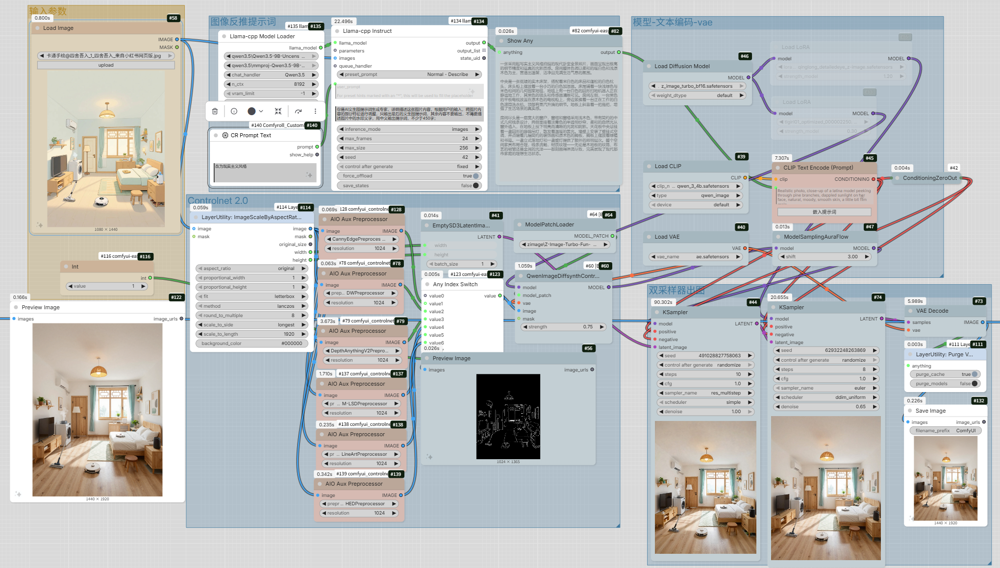
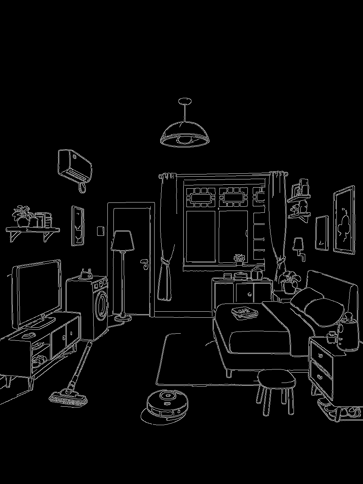
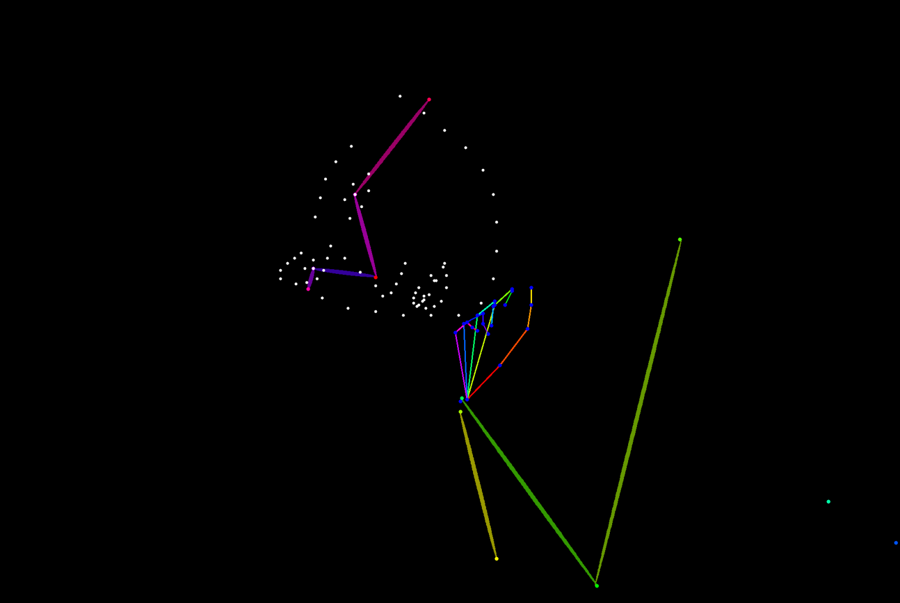
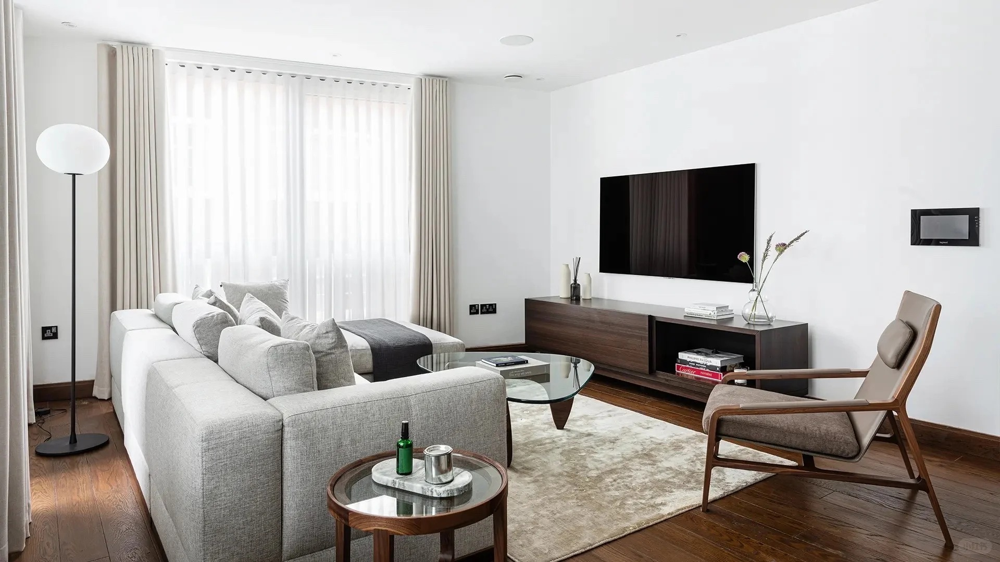
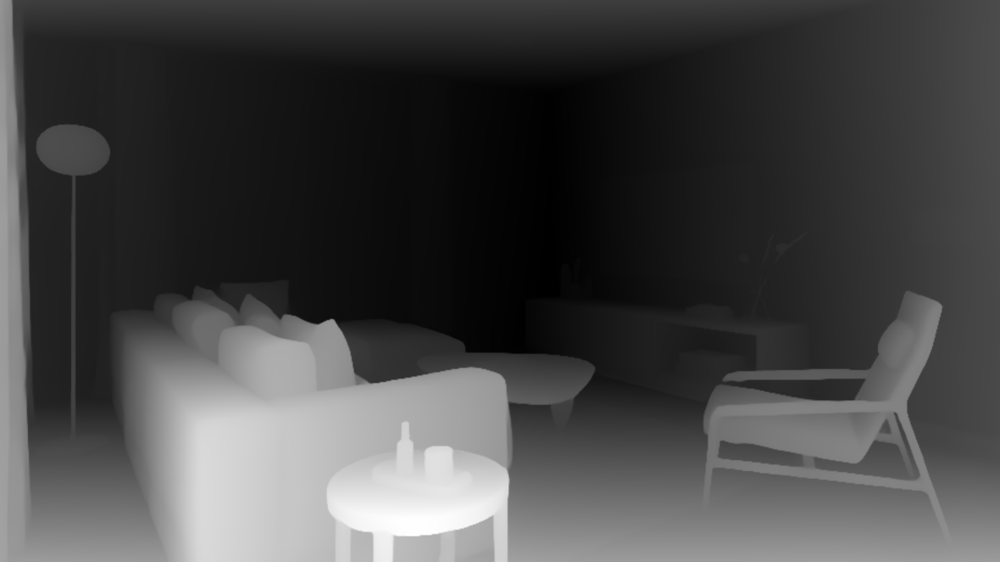
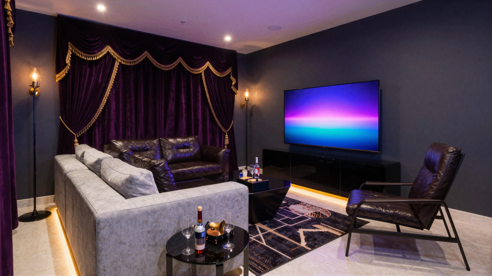
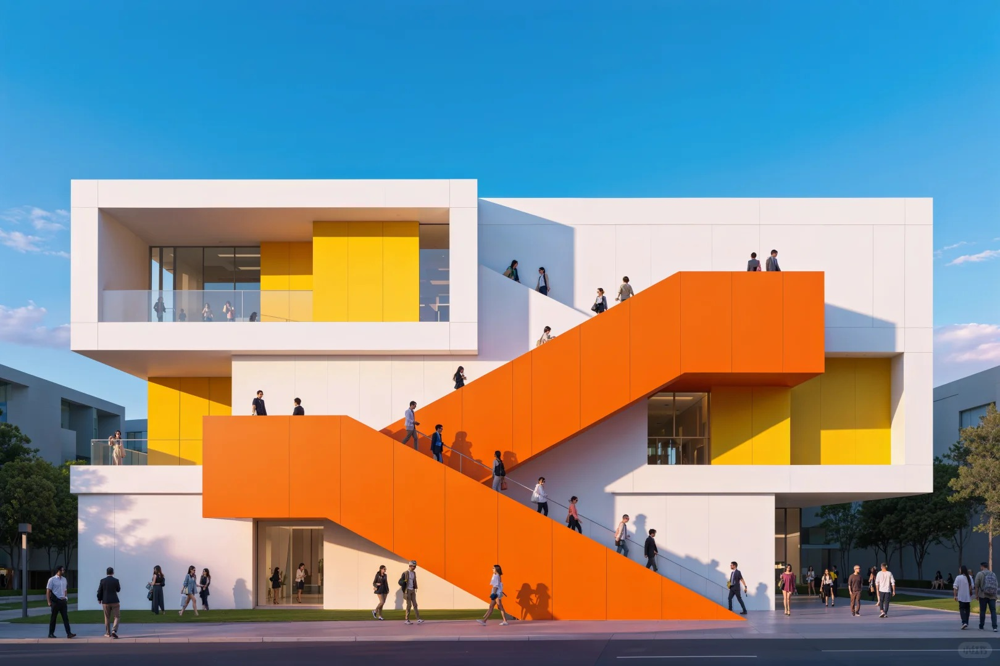
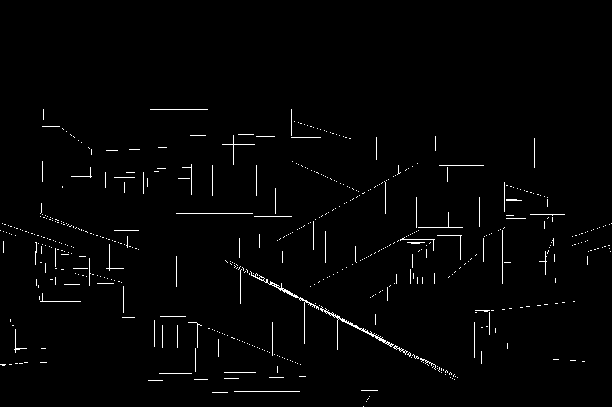
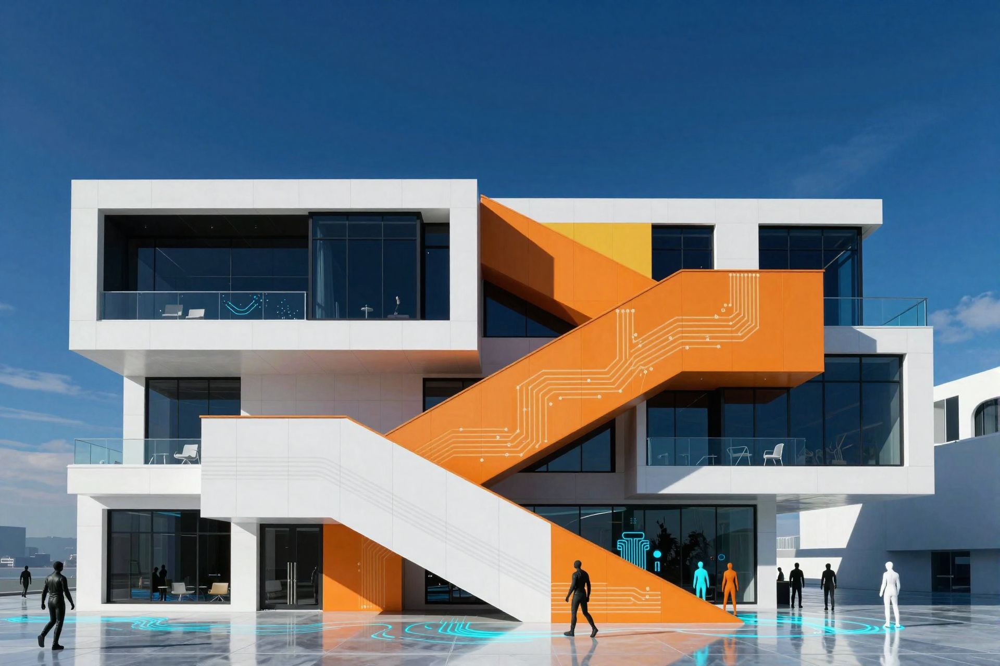
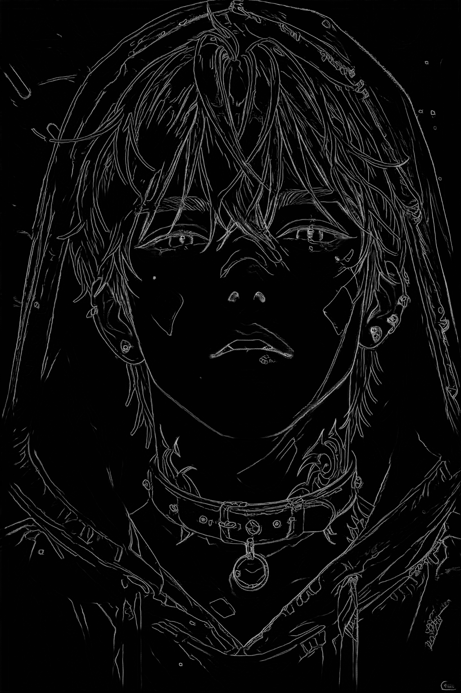

← 返回首页
ControlNet 进阶引导方案
ComfyUI 综合控制工作流 (6合1)

核心技术链路： 本方案利用 Qwen 3.5 视觉大模型 作为创意核心，自动抓取参考图的深层语义；配合 ControlNet Union 2.0 的全能控制矩阵，实现线稿、深度、姿态的无缝切换。
核心亮点在于 Z-Image Turbo 的双采样精修逻辑：先由高效率采样器快速定型，再由精修采样器进行高保真重绘，在保持 1:1 结构还原的同时，提供工业级的成图质量。
多模式效果演示 (6-Mode Gallery)
原图结构
边缘引导

生成结果
01. CannyEdge (边缘检测)
高保真提取轮廓线条，适合工业产品或建筑结构精确还原。
原图结构
骨架引导

生成结果
02. DWPreprocessor (全身姿态)
精准捕捉人体骨架与手部细节，实现跨场景的人体动作迁移。
原图结构

深度引导

生成结果

03. DepthAnythingV2 (深度映射)
基于最新深度估算模型，提供极具层次感的空间引导与前后关系。
原图结构

直线引导

生成结果

04. MLSD (直线检测)
过滤杂乱干扰，专注室内设计与硬核建筑的直线骨架控制。
原图结构
线稿引导
生成结果
05. LineArt (艺术线稿)
提取具有艺术笔触的线稿，完美适配二次元或插画风格创作。
原图结构
柔和引导

生成结果
06. HED (柔和边缘控制)
保留边缘的渐变细节，使光影过渡与背景融合更加自然。